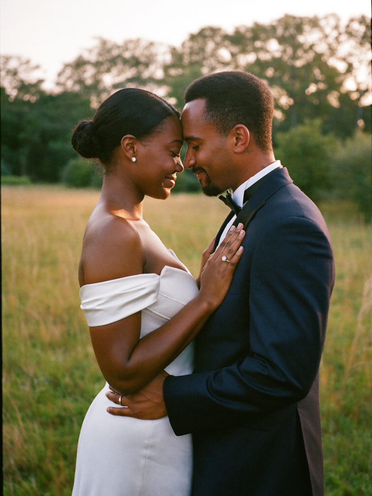
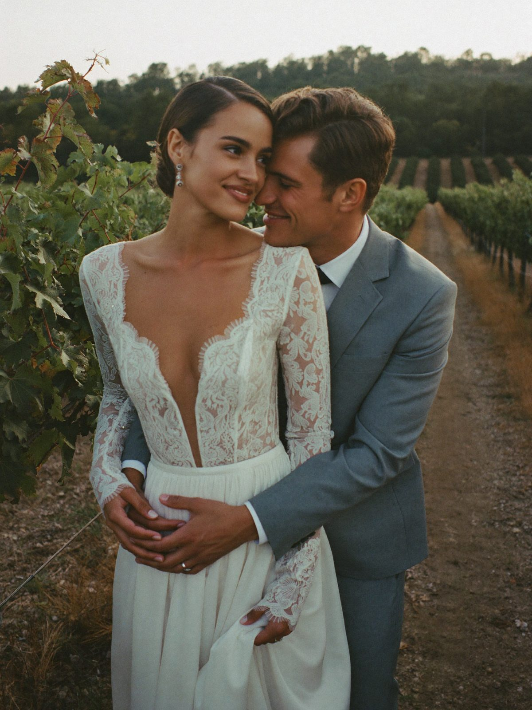
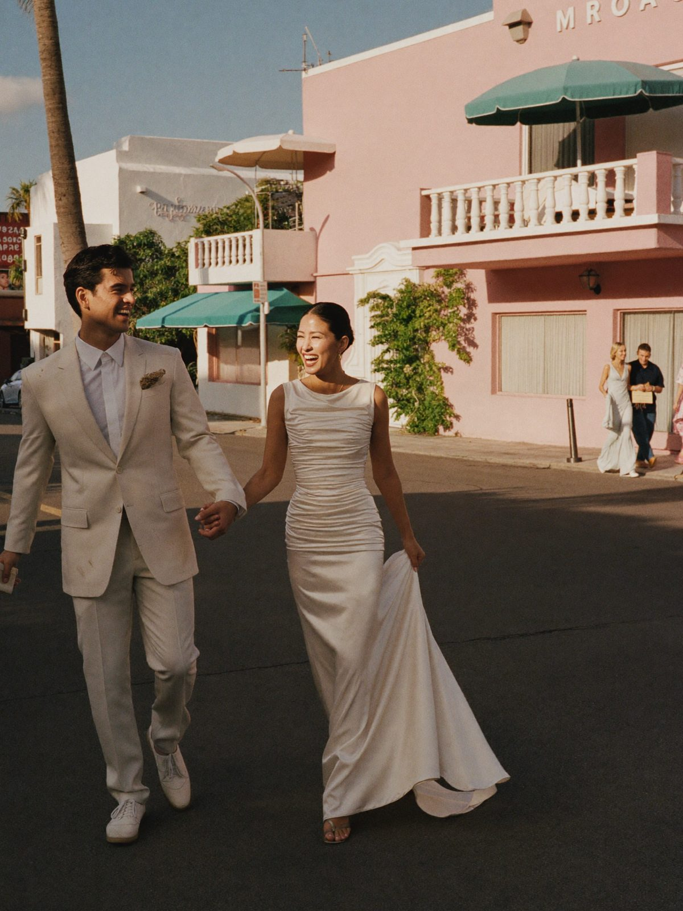
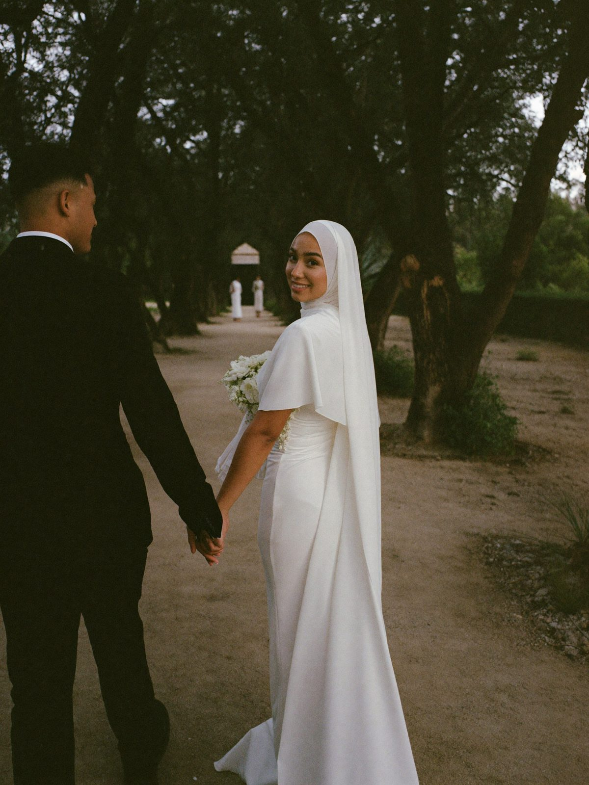
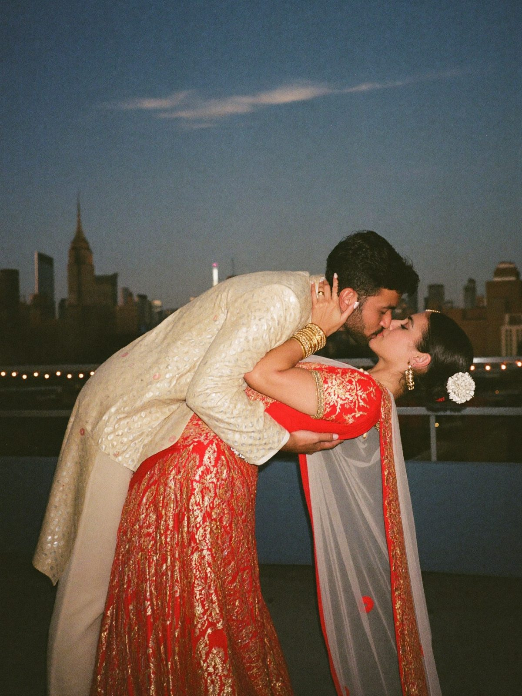
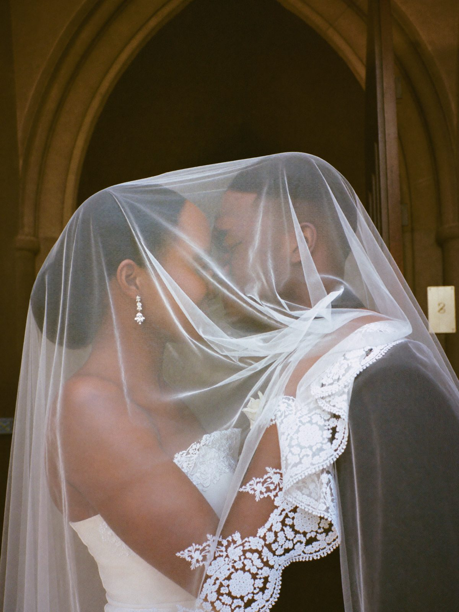
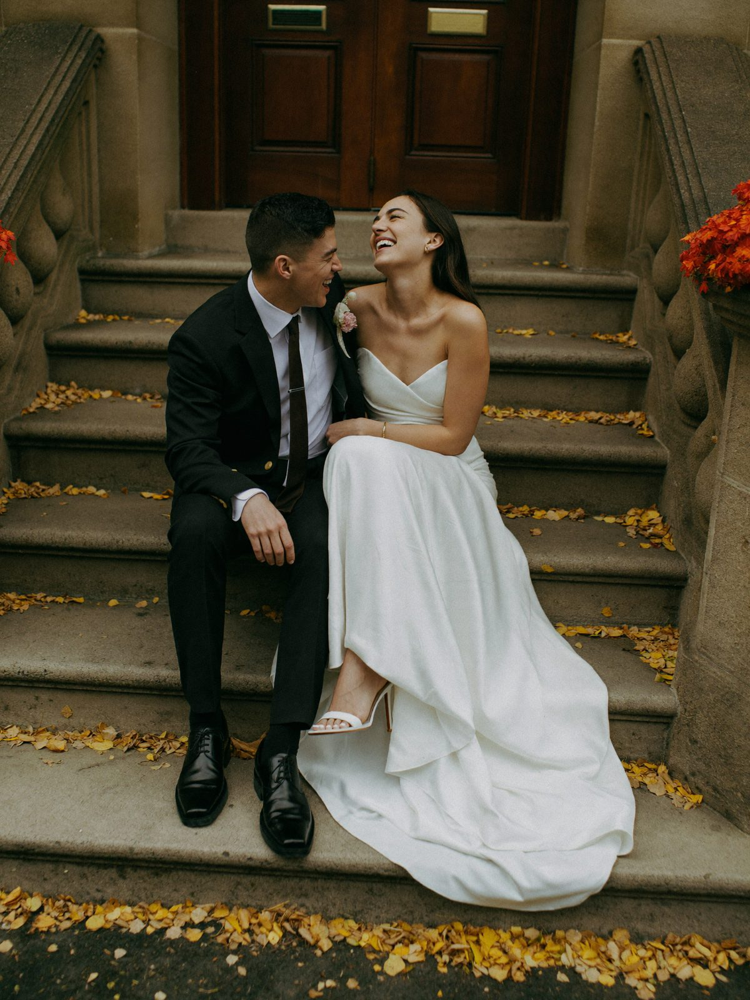
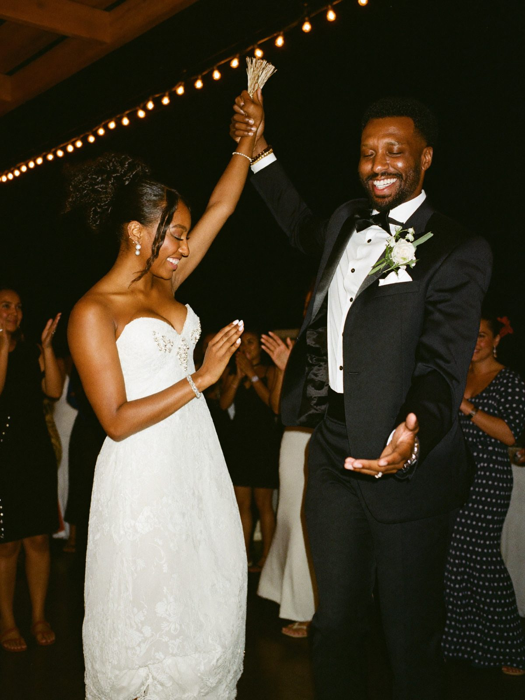

20 Wedding Poses for Bride and Groom: Body Cues, Timing and Prompts That Make Them Look Natural
The first guide in our free wedding pose series: classic, candid, intimate and cultural poses, plus how many you can realistically get through in a portrait session.
The best wedding poses for bride and groom are simple ones you can hold while doing something real: the forehead touch, the walk toward the camera, the back hug, the look back and the slow dip. A good photographer sets up each pose with two or three body cues (weight on the back foot, chin forward, hands placed on purpose), then gives you a prompt so the expression is genuine. In a typical 20 to 30 minute couple session you will move through about 8 to 12 poses, so pick your favorites below and share them during planning.
This is the first guide in our free wedding pose series. The illustrations show the shape of each pose; your photographer adjusts it to your bodies, clothes and light.
The four body cues behind every good wedding pose
- Weight on the back foot. Shift onto the foot farther from the camera and soften the front knee. It lengthens the body and stops the soldier stance.
- Chin forward, then slightly down. Push your forehead an inch toward the lens and drop the chin a touch. It defines the jaw. It feels strange and looks great.
- Hands with a job. On a waist, a lapel, a bouquet, a cheek or a hand. Never hanging, never gripping.
- Space between arms and body. A small gap at the elbow shows the shape of a gown or jacket.
Classic portraits
These are the standing couple poses for wedding photos that end up framed in your parents' house. Do them first, while hair and collars are fresh.
1. The forehead touch

The most requested romantic wedding couple pose. Stand chest to chest, each step your outside foot back so your hips open toward the camera, and lean in until foreheads meet. Her ring hand rests flat on his chest; his hands sit lightly at her waist. Close your eyes halfway and breathe out.
Best time: golden hour, when side light outlines both faces. What makes it natural: a prompt like "tell each other one thing you noticed about today." The small smiles that follow are the shot.
2. The classic front-to-front hold
The portrait for the mantel. Face each other at a quarter turn to the camera, her hand on his lapel, his arm around her lower back, both looking at the lens with weight on back feet.
Best time: right after the first look or ceremony, in open shade. It flatters every body type and age, the backbone of any wedding photo poses list.
3. The back hug

He stands behind her, slightly to one side, arms around her waist with his hands over hers. She leans back into him. He brings his cheek near her temple, favoring the side away from the camera so both faces show.
Best time: sunset, with the light behind you. Great for shy couples because nobody looks at anyone. Prompt: "Whisper what you are most excited to eat tonight."
4. Side by side, shoulder to shoulder
Stand next to each other facing the camera, shoulders touching, each turned inward a quarter, arms linked or hands joined in front. This is the easiest of the simple wedding poses and one of the best wedding poses for older couples: comfortable to hold, good for posture, both faces fully in frame.
Best time: any light, including midday under a tree or awning. Look at each other, then back at the lens on a count.
Movement and candid poses
Movement fixes stiffness. When you walk, turn or laugh, your body arranges itself.
5. Walk toward the camera

Hold hands and walk toward the photographer at half speed, talking to each other the whole way. The photographer shoots a burst and picks the frame where steps and expressions line up.
Best time: early or late on a quiet street, garden path or long hallway. Walk it three or four times. The first pass is always stiff; the third is usually the one.
6. The look back

One partner leads the other by the hand away from the camera, then glances back over the shoulder toward the lens. It is fully modest, which makes it a favorite for hijab-wearing brides and conservative families. Turn the shoulder first, then the head, so a hijab or veil drapes cleanly.
Best time: late afternoon on a path with depth behind it.
7. The twirl
He holds her hand above her head and she turns once, slowly. Repeat it three times and let the later ones get sillier. Gowns with volume love this, and so do brides who feel awkward standing still.
Best time: open space with even light, or the dance floor.
8. The dip

He steps forward on a bent knee, supports her upper back with one arm and her hand with the other, and lowers her a short way. She keeps her core engaged and lifts her chin toward him. A shallow dip photographs as well as a deep one and is safer in a heavy lehenga.
Best time: blue hour or night with city lights behind you. Practice once at home; the confidence shows.
Intimate close-ups
These suit couples who want romance without big gestures.
9. Under the veil

Lift the long veil over both heads and stand nose to nose. Backlight turns the veil into a glowing frame, and a doorway keeps it calm.
Best time: right after the ceremony, while the veil is still in. It is one of our favorite black couple wedding poses because soft light through the veil flatters every skin tone, with exposure set for your faces rather than the bright fabric. Prompt: "Say the first line of your vows again, quietly."
10. Hands and rings
Join hands with rings stacked and fingers relaxed, resting on his jacket, the bouquet or a stone ledge. Add henna, a grandparent's watch or a family ring. Under two minutes, and the frame couples use for thank-you cards.
11. The whisper
One partner leans in and whispers; the other reacts. The pose is just the lean. This is the best pose for couples who hate being photographed, because the reaction is real and there is nothing to perform. Use it between bigger setups as a reset.
12. Seated and close
Sit side by side on a bench or low wall, knees angled toward each other, hands joined in the middle, shoulders leaning in. It is kind to anyone in heels for eight hours and another strong choice among wedding poses for older couples.
Wide and scenic
Wide frames show where you were. Ask for a few even if you love close-ups.
13. Seated on the steps

Sit together on wide steps, her one step lower or angled in front, gown cascading down. Lean in and tell each other a story from the day.
Best time: soft afternoon light, on a stoop, church steps or a museum staircase.
14. Small in the frame
The photographer backs far away while you stand hand in hand in a big setting: a field, a skyline, a church nave. The place becomes the story, and at that distance nobody sees a nervous face. Our destination wedding photographer guide covers scouting scenic spots away from home.
15. The silhouette
Face each other against a bright sky, profiles to the camera, close enough that your outlines connect, arms separated from your bodies. Best in the last minutes before sunset.
Traditional wedding poses for couples
Traditions make a gallery yours. Tell your photographer which ones you are including so they know where to stand and which elders to include. Our wedding shot list guide has a section on cultural and faith moments.
16. Jumping the broom
Many African American couples jump the broom to honor ancestors who were denied legal marriage during slavery and created their own ceremonies. Hold hands, face the broom (often held or decorated by family) and jump together on a three count while the photographer shoots a burst from a low angle.
Best time: right after the pronouncement or at the reception entrance. The joy in these frames is completely unposed.
17. The garland portrait
At many Hindu and South Asian weddings, couples exchange garlands (the jaimala or varmala). Afterward, stand side by side with garlands on, his sherwani buttoned, her lehenga fanned slightly by holding the edges out, dupatta settled over one shoulder. Then turn toward each other for a second frame. Do it while the flowers are fresh, and let a relative fix the dupatta between frames.
18. The modest Nikah portrait
For a Nikah or any couple keeping portraits modest, the strongest poses use closeness rather than kissing: hands joined, shoulders touching, eyes on each other, foreheads close only if the family is comfortable. Check hijab pins before every setup and choose sheltered spots out of the wind. Many families prefer a female photographer for parts of the day; raise it early with our questions to ask a wedding photographer.
Reception and celebration
At the reception, posing is mostly about where you stand so the cameras see your faces.
19. The grand entrance
Nigerian receptions often bring the couple in dancing while guests spray money, and Somali receptions often build to a big entrance with traditional music and dance. Enter facing the room, dance toward the center and pause once in the middle so photo and video get a clean frame with the crowd behind you. If your celebration is gender-separated, plan which spaces each camera person covers.
20. Dance-floor celebration

Less a pose than a permission slip. Get in the middle of the floor, throw your arms up on the song everyone loves and let your friends close in. Face each other, not the DJ. Best during the first open-dancing set, while everyone is still there.
Wedding poses at a glance
Times are rough working estimates per pose, including a couple of variations.
| Pose | Best time | Time | Shy couples |
|---|---|---|---|
| Forehead touch | Golden hour | 2 to 3 min | Yes |
| Front-to-front hold | After first look or ceremony | 2 min | Somewhat |
| Back hug | Sunset, backlit | 2 min | Yes |
| Side by side | Any, even midday shade | 1 to 2 min | Yes |
| Walk toward camera | Morning or late afternoon | 3 to 4 min | Yes |
| Look back | Late afternoon | 2 min | Yes |
| Twirl | Any open space | 2 min | Somewhat |
| Dip | Blue hour or night | 2 to 3 min | No |
| Under the veil | After the ceremony | 2 min | Yes |
| Hands and rings | Any | 1 to 2 min | Yes |
| Whisper | Between setups | 1 min | Yes |
| Seated and close | Late in session | 2 min | Yes |
| Seated on steps | Soft afternoon | 3 min | Yes |
| Small in the frame | Golden or blue hour | 2 min | Yes |
| Silhouette | Just before sunset | 2 min | Yes |
| Jumping the broom | Ceremony end or reception | 1 to 2 min | Yes |
| Garland portrait | After the ceremony | 2 to 3 min | Somewhat |
| Modest Nikah portrait | After the Nikah | 3 min | Yes |
| Grand entrance | Start of reception | 3 to 5 min | Somewhat |
| Dance-floor celebration | First dancing set | Live | Yes |
How to feel natural in front of the camera
Prompts beat poses. A pose gets your bodies into a good shape; a prompt gives your faces something real to do. The best portraits are almost always both.
Prompts that work for most couples:
- "Tell each other the moment today when it felt real."
- "Whisper the worst dance move you plan to do tonight."
- "Walk to that tree and argue about who said I love you first."
- "Hug like you have not seen each other in a month."
Look at each other more than at the lens, and breathe out before each frame. If you have an engagement session planned, treat it as rehearsal; our engagement photos guide explains why.
Wedding poses for couples who hate being photographed
- Pick poses where you do not face the lens. The back hug, walk toward the camera, look back, whisper and small in the frame all hide nerves.
- Ask for movement over stillness. Walking and twirling give your body a job.
- Add video. Footage of you laughing between poses often shows the most relaxed version of you. Our guide to booking a wedding photographer and videographer together explains how one team covers both, and the wedding videographer cost guide helps you budget.
- Say it in the planning call. A good photographer will shorten setups and direct more closely.
How many poses fit in a 20 to 30 minute portrait session?
In our experience, a 20 to 30 minute couple session covers about 8 to 12 poses across two or three spots. Each pose takes one to three minutes with variations, and every move costs a few minutes of walking and fixing the gown. Hijabs, long veils, garlands and lehengas need extra reset time, so plan on the lower end.
Pick your five must-haves during planning and let the photographer fill the rest based on the light. With a first look plus a short golden hour session, you can cover nearly all 20. Our wedding photography timeline guide shows where these sessions land in 4, 6 and 8 hour days, and the first look guide explains how a first look buys more portrait time.
Frequently asked questions
What are the most popular wedding poses?
The forehead touch, the back hug, walking toward the camera, the dip and the under-the-veil kiss are among the most requested. They work for almost every couple and venue. Pair each with a prompt and they look personal instead of copied.
What are simple wedding poses for bride and groom?
Side by side with shoulders touching, the front-to-front hold, holding hands while walking and the whisper. Each needs one or two body cues and a minute or two, which makes them ideal when time is short or nerves are high.
What are good wedding poses for older couples?
Seated poses, side by side with arms linked, the forehead touch and a slow walk are all comfortable to hold. Skip deep dips and long standing setups, and keep a bench or chair nearby.
How do I pose for wedding photos if I'm awkward?
Use movement and prompts instead of stillness. Walk, whisper, hug from behind and look at your partner instead of the lens. Tell your photographer you feel awkward so they direct you closely and keep setups short.
What are the top 10 wedding poses?
Our top 10 are poses 1 through 9 above plus the dance-floor celebration. Put any tradition you are honoring, like jumping the broom, at the top of your own list.
What should I do with my hands in wedding photos?
Give them a job: a partner's chest, waist, lapel or cheek, the bouquet at hip height, or joined hands in front. Touch lightly and keep the ring hand toward the camera.
What are the best wedding poses for family?
Family photos run on a different system: named groupings, a fast order and arrangements for large families. The next guide in our wedding pose series covers family formals in detail. Until then, use the family grouping template in our wedding shot list guide.
How Leo Operations approaches this
We direct couples with prompts, not stiff poses. A planning conversation produces a written shot list and timeline, and portrait time is built into both: the poses you want, where they happen and how long each session runs. On the day, a few body cues set the pose and a prompt brings the expression.
Leo Operations is headquartered in Nashville, serves Middle Tennessee including Brentwood, Franklin and Murfreesboro, and travels to couples in other states, from New York to Miami. Our wedding team provides photography, 4K videography or both from one coordinated team, with two camera professionals on most weddings and a third when the timeline needs it, and coverage up to eight consecutive hours. Edited photos arrive within three business days and the 5 to 7 minute highlight film within 14 business days. We have photographed more than 1,000 events and have worked with many multicultural and faith traditions, including Somali, Nigerian, Muslim and Christian weddings.
If you are planning your portraits, email us your date, venue and the poses you love, and we will tell you honestly what fits in your day.